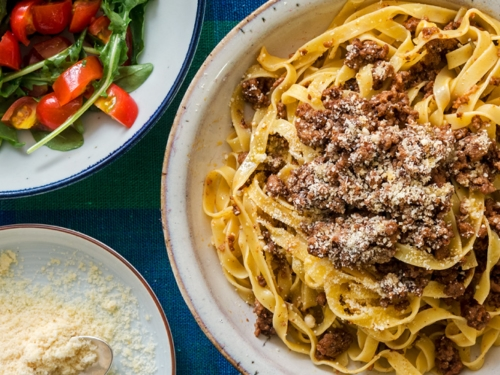

Ragu alla Bolognese

A true classic from the city of Bologna
This meat sauce is typically made from minced pork and beef,
and is a true classic of the Italian culinary canon. A must-try
for each and every epicurean!
Ingredients
For the Sauce
- 1 stick of celery
- 1 carrot
- 1 onion
- 150g flat pancetta
- 200g minced beef
- 200g minced pork
- 1 glass of quality red wine
- 3 tbsp good quality tomato paste
- 200ml chicken stock
To serve
- 500g Rigatoni
- Freshly grated parmesan
- Salt and Pepper to taste
Steps
- Finely dice the celery, carrot and onion. Slice pancetta
into small lardons. Put ingredients in the pot with a little olive oil and
sweat over a medium heat until the vegetables have softened
and are starting to brown.
- Add the minced meat and break apart into smaller pieces with
the back of a wooden spoon. Cook over a medium-high heat until the
meat has browned and there is little liquid left in the pot.
-
Turn the heat to high and add the glass of wine, let bubble until
the smell of alcohol has disappeared.
-
Dissolve the tomato paste in the hot chicken stock, then add to the
pot with the rest of the ingredients.
-
Turn the heat to low, and let simmer for 1.5 hours covered.
-
Serve over cooked rigatoni, with freshly grated parmesan. Season to taste.
Home